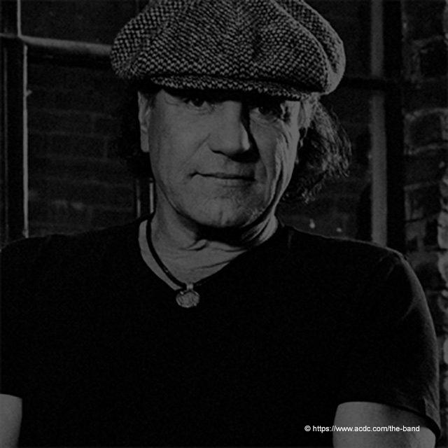
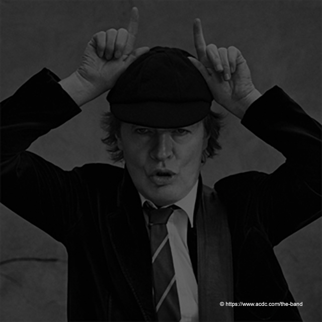
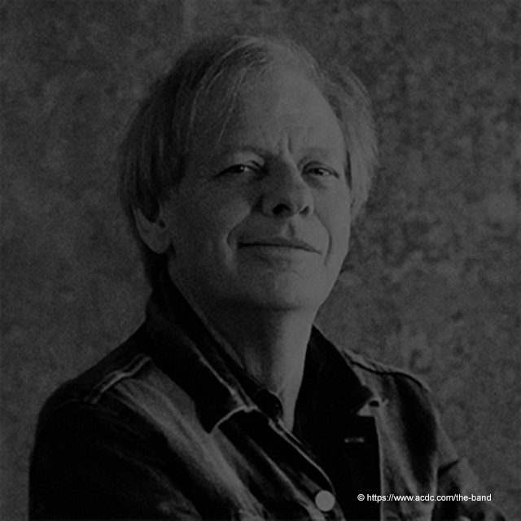
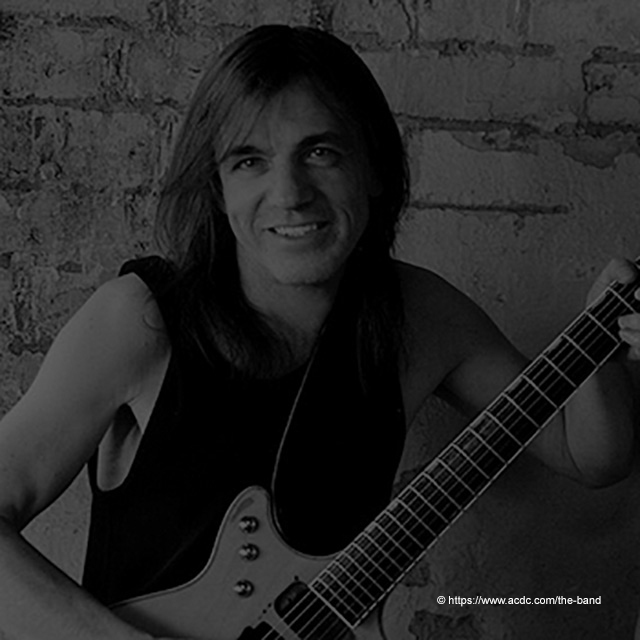

New Media Design I
Een muziekband voor en door senioren
- Naam
- Roggeman Fée
- Studentnummer
- 102348
- Klasgroep
- 1CMO Ba
Mijn opdracht
Introductie

Het thema dat ik koos voor dit project is ‘een muziekband voor en door senioren’.
Senioren worden gezien als ‘oud en versleten’. Men denkt dat senioren een saai leventje leiden. Met dit project wil ik graag dit stereotype doorbereken. Ik heb daarom gekozen voor een rockband zodat ik kan aantonen dat senioren wel nog actief zijn en genieten van elk moment in hun leven.
Een website voor dit concept moet dus zeer overzichtelijk zijn, goed leesbaar en makkelijk te gebruiken. Grote knoppen kunnen dus goed van pas komen. Ook een ‘vergrootglas’ in de navigatiebalk is een handige optie voor senioren.
Door advertenties op https://www.seniorennet.be/ kan er meer reclame gemaakt worden voor de concerten en bereiken we op deze manier een groter publiek.
Er moet een mogelijkheid zijn voor de senioren om makkelijk en snel online of telefonisch tickets te bestellen en te reserveren.
Een vaak voorkomend probleem voor senioren is het vervoer. Er moet een mogelijkheid zijn om makkelijk met het openbaar voervoer tot aan het concert te komen. Ook zouden ‘partybussen’ die de senioren op bepaalde plaatsen ophaalt en later veilig terugbrengt zeer goed van pas komen.
Het streefdoel moet zijn om de senioren ze comfortabel mogelijk een onvergetelijke avond te bezorgen. Hier hoort dan ook een originele locatie bij zoals bijvoorbeeld een museum waarin zich de volledige geschiedenis afspeelt of bijvoorbeeld een kerk zodat deze niet altijd geassocieerd wordt met de dood of een geboorte. Belangrijk is dat de locatie toegankelijk is voor rolstoel patiënten veel trappen zijn dus geen optie.
Korte voorstelling van de band.

Brain Johnson (zanger)
Brain Johnson is 71 jaar oud en was/is de zanger van de Australische hardrockband AC/DC.
Johnson was in de jaren zeventig de zanger van de glamrockband Geordie en kwam in 1980, na de dood van zanger Bon Scott, bij de rockgroep AC/DC.
In maart 2016 werd bekend dat Johnson lijdt aan ernstige gehoorschade, hij zou zelfs volledig zijn gehoor zou kunnen verliezen. Op dat moment was de band bezig met hun tweejarige tour Rock or Bust, die daarom werd onderbroken. In april 2016 nam Johnson tijdelijk afscheid van AC/DC wegens deze gehoorproblemen. De tour werd afgemaakt met gastvocalist Guns N' Roses zanger Axl Rose. Johnson gaf in een verklaring in april 2016 aan dat hij door artsen is afgeraden op te treden in grote stadiums. Dit zou zijn gehoor te veel schade toebrengen. Echter gaf hij wel aan dat het opnemen van een nieuw album niet uitgesloten is. Ook wilde hij de fans erop wijzen dat Axl een tijdelijke vervanger is. Johnson is zeker nog niet definitief uit de band zoals men de eerste dagen dacht.
https://nl.wikipedia.org/wiki/Brian_Johnson_(zanger)

Angus Young (gitarist)
Angus McKinnon Young is 63 jaar oud en is de gitarist van de hardrockband AC/DC. Hij komt uit een muzikale familie die begin jaren 60 verhuisde naar Australië, zijn oudere broer George Young speelde in de The Easybeats.
Malcolm richtte in 1973 een nieuwe band op en vroeg Angus om om lid te worden. AC/DC werd daarna al snel een begrip. Beroemd zijn zijn gimmicks zoals het onafscheidelijke schooluniform en het kenmerkende Chuck Berry-loopje, de duckwalk. Hijzelf beweert dat hij zich in zijn schooluniform het meest op zijn gemak voelt als hij gitaar speelt, omdat hij vroeger als hij van school kwam onmiddellijk in zijn kamer gitaar begon te spelen zonder zijn uniform eerst uit te trekken. De waarheid is echter dat hij vóór het uniform vele gimmicks heeft geprobeerd. Zo trad hij in zijn beginjaren (nog vóór AC/DC) op in een gorillapak, maar stopte hiermee omdat het te warm en onhandelbaar werd in de hete spotlights. Later probeerde hij het dan in een Supermankostuum, compleet met een telefooncel op het podium, waarin hij zich dan tussen twee gitaarsolo's omkleedde. Ooit raakte hij in zijn haast midden in een optreden hierin vastgeklemd, waarna het beroemde schooluniform weer uit de kast kwam, dat nu na al die jaren zijn handelsmerk is geworden. Angus Young speelt op een Gibson SG Heritage Cherry. Gibson heeft een signatuurserie van deze gitaren uitgebracht.
https://nl.wikipedia.org/wiki/Angus_Young

Steve Young (slaggitarist)
Stevie Young is 62 jaar oud, hij is een Schotse gitarist en een neef van de AC/DC-gitaristen Angus en Malcolm Young. Stevie Young is de zoon van hun broer Stephen. Tijdens het Amerikaanse gedeelte van de Blow Up Your Video Tour van AC/DC in 1988, viel Stevie tijdelijk in voor Malcolm op de slaggitaar. Malcolm was namelijk tijdelijk niet beschikbaar wegens een alcoholverslaving.
Stevie Young had net als velen uit de familie Young aanleg voor muziek. De eerste drie bands waar hij deel van uitmaakte, waren 'The Stabbers', 'Prowler' and 'Tantrum', die allemaal gevormd werden in de Schotse plaats Hawick in de late jaren 70. In 1980 stichtte hij de band Starfighters. Deze band had beduidend meer succes en maakte in de jaren 80 twee albums.
De band Starfighters werd in 1983 opgeheven. De bandleden kwamen in 1987 weer bij elkaar, maar ook ditmaal ging het mis, wat mede kwam door Youngs invalbeurt bij AC/DC. Hij besloot een nieuwe band op te richten, 'Little Big Horn'. De eerste opname werd geproduceerd door Malcolm Young. Uiteindelijk ging ook deze band uit elkaar in 1993 doordat ze geen contract kregen bij een goede platenmaatschappij. De laatste band van Stevie Young was 'Up Rising' die ook uit elkaar ging. Hierna verdween Stevie Young uit de muziekwereld.
Sinds 2014 speelt Young vast bij AC/DC, omdat Malcolm Young te maken kreeg met dementie. Eind 2014 bracht hij samen met AC/DC het nieuwe studioalbum Rock or Bust uit. In 2015 speelt hij ook mee tijdens de tournee Rock or Bust van AC/DC.
https://nl.wikipedia.org/wiki/Stevie_Young

Chris Slade (drummer)
Chris Slade is 72 jaar oud en is een Britse drummer.
Slade heeft in zijn carrière met veel bands samengewerkt. In de jaren zestig was hij drummer bij Tom Jones. Verder speelde hij in de bands Manfred Mann's Earth Band, Asia, The Firm en AC/DC. Bij AC/DC had hij een drumstel met drie bassdrums. Eén stond er op de grond (zoals normaal) en nog eens twee stonden op standaards aan weerszijden van de drumkruk. Hier sloeg hij op met zijn drumsticks, alsof ze een normale trommel waren. Het mooiste voorbeeld hiervan is te zien in de video voor het nummer Thunderstruck. Slade vertrok in goed onderling overleg in 1994 bij AC/DC toen drummer Phil Rudd na een afwezigheid van meer dan 10 jaar terugkeerde.
Na zijn vertrek bij AC/DC speelde hij enkele jaren opnieuw bij Asia, tot hij in september 2005 die band verliet. Daarna drumde hij onder meer in een AC/DC-tribute band.
In februari 2015 bleek Slade te zijn teruggekeerd bij AC/DC als vervanger voor de in problemen geraakte Phil Rudd, toen hij met de groep optrad bij de Grammy-awards. Later die maand werd bekend dat Slade ook actief zal zijn bij de tour die AC/DC onderneemt als promotie voor hun toenmalig nieuwe album Rock or bust.
https://nl.wikipedia.org/wiki/Chris_Slade